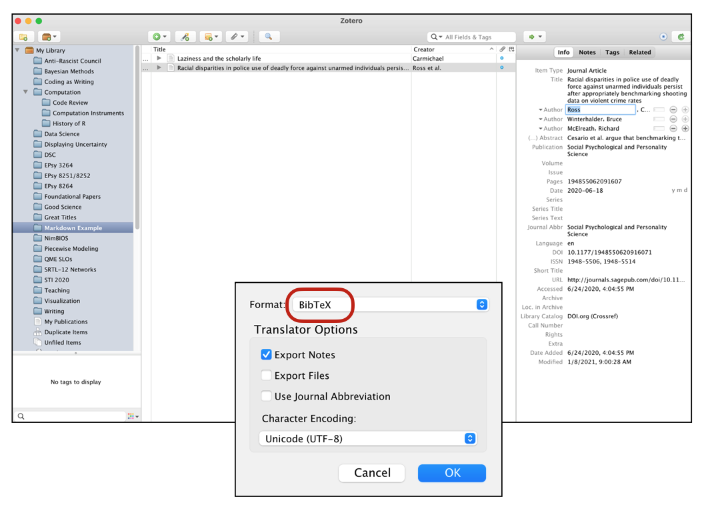

This document contains some additional instruction for EPsy 8252. Note that I might add to this as students hit me with questions over the course of the semester.
3.1 Code Chunks for Figures
Code chunks can be used to do anything you can do in R. For example we can fit regression models, create plots, compute summary measures, or mutate dummy variables into our data. For figures, there are a bunch of chunk options that are useful.
To label code chunks that include figures, we will append fig- to the label name. For example, we can use #| label: fig-density-knowledge to label a code chunk where we are creating a density plot of the news knowledge variable.
We can add a caption using the #| fig-cap: chunk option. It is also a good idea to also include the #| fig-alt: chunk option with figures. This provides alternative text for screenreaders (which is required under the new federal accessability laws). Below is an example of this:
---title: "My First Quarto Document"subtitle: "Hello World"author: "Andy and Iggy"date: todayformat: html---# Code Chunk```{r}#| label: fig-density-knowledge#| fig-cap: "Here is your figure caption."#| fig-alt: "Here is alternative text for screenreaders."ggplot(data = pew, aes(x = knowledge)) + geom_density()```
Notice that by labeling this chunk with fig-, the figure is numbered in the document. This allows the figure to also be cross-referenced. You can do this by using the “at” symbol (@) along with the figure’s label name. For example, to cross-reference to the density plot we created, we could use something like:
---title: "My First Quarto Document"subtitle: "Hello World"author: "Andy and Iggy"date: todayformat: html---# Code Chunk```{r}#| label: fig-density-knowledge#| fig-cap: "Here is your figure caption."#| fig-alt: "Here is alternative text for screenreaders."ggplot(data = pew, aes(x = knowledge)) + geom_density()```The distribution of news knowledge is unimodal (see @fig-density-knowledge).
3.1.1 Figure Size
There are a couple other chunk options for figures that help set the aspect ratio and size of the figure in your document. The aspect ratio is the ratio of a figure’s width to its height. We set this using the #| fig-width: and #| fig-height: chunk options. (The default value for both is 6; thus the figure appears square.) Below we change these so that the figure appears wider than it is tall.
```{r}#| label: fig-density-knowledge-2#| fig-cap: "Density plot showing the distribution of news knowledge."#| fig-alt: "Density plot showing a a unimodal distribution of news knowledge."#| fig-width: 9#| fig-height: 5ggplot(data = pew, aes(x = knowledge)) + geom_density()```
Figure 3.1: Density plot showing the distribution of news knowledge.
FYI
It is important to change the aspect ratio when you have legends or when you are using {patchwork} to stack or put multiple figures next to each other. Many times you need to find a good aspect ratio though trial-and-error of trying different values.
The actual size of the figure in the document is independent of the aspect ratio and can be set using the #| out-width: or #| out-height: chunk option. These options take a character string of the direct size (in HTML documents this is typically in pixels) or of the percentage of the output width/height. Here we keep the same aspect ratio, but make the figure smaller by setting the figure width to 40% of the document’s width.
```{r}#| label: fig-density-knowledge-3#| fig-cap: "Density plot showing the distribution of news knowledge."#| fig-alt: "Density plot showing a a unimodal distribution of news knowledge."#| out-width: "40%"ggplot(data = pew, aes(x = news, y = knowledge)) + geom_point()```
Figure 3.2: Density plot showing the distribution of news knowledge.
PROTIP
If you set the aspect ratio of the figure, you need only set #| out-width: or #| out-height:. You don’t need to set both as the other will be determined by the aspect ratio.
3.2 Inline Code Chunks for Better Reproducibility
In writing papers where there are results from data analyses being reported in the text, inline code chunks are boss! For example, consider writing the following sentence in an analysis of the pew.csv data.
The effect of news exposure on news knowledge is 0.327 (SE = 0.09).
Rather than computing these values and then transposing the values into the sentence, we can use inline code chunks to directly compute and write the values in the sentence. Recall, earlier we assigned the tidy() output into an object called lm1coef. The results from tidy() are a tibble (or data frame).
A tibble/data frame is a combination of rows and columns. We can access different parts of the tibble by indexing the row and column that we want. For example, to access the slope standard error, which is in the 2nd row and 3rd column, we could use:
# Access slope SElm1coef[2, 3]
# A tibble: 1 × 1
std.error
<dbl>
1 0.0899
Unfortunately, this also comes out as a labelled tibble. If we just want the SE value we double index this. Thus to get the value of the slope SE, we use:
# Access slope SE number onlylm1coef[[2, 3]]
[1] 0.08994213
Here is how we could extract the slope value and the SE of the slope value to write our earlier sentence:
The effect of news exposure on news knowledge is `r lm1coef[[2, 2]]` (SE = `r lm1coef[[2, 3]]`).
This produces the following sentence in the rendered document:
The effect of news exposure on news knowledge is 0.3271158 (SE = 0.0899421).
Note: You don’t need to assign the output to an object to index it. For example, the SE could also be extracted using: `r tidy(lm.1)[[2, 2]]`
3.2.1 Rounding
There are several ways to set the rounding to two decimal places. One is to embed the computation in the round() function. For example, in the first inline chunk we could use: round(lm1coef[[2, 3]], 2).
You can also do this in a separate code chunk and then call the values in the inline computation (as suggested in the Quarto Computations Tutorial).
3.3 Multiline Equations
There are a couple of ways to create multiline equations in a Quarto document. I tend to use the split environment from LaTeX to do this. To use this:
Include \begin{split} and \end{split} in the display equation.
At the end of each line (where you want a linebreak) include a double backslash, \\.
In each line of the multiline equation, also include the ampersand sign (&) at the point we want the multiple lines to align vertically.
Note that the ampersand appeared immediately before the equal sign in each line of the equation, so that is where the two lines are aligned vertically (the equal signs are on top of each other). You can add as many lines to this as you want.
FYI
Multiline equations are quite useful to show your work and when you have really long single equations that need to be broken up so they fit on the page (e.g., a regression equation with many predictors).
3.3.1 Spacing Out the Lines
You can add space between the lines of your multiline equation by including a unit of measurement between square brackets after the double backslashes.
Here we have added line space of 1 em. An em is a unit for measuring the width of printed work, equal to the height of the type size being used (typically the width of the letter “m”). Other common printing units include the en (the width of the letter “n”), and the ex (the width of the letter “x”).
3.3.2 Typesetting 101: Hyphens, Minus Signs, and Dashes
In printed work the width of a hyphen, a minus sign, and dashes are all different. Quarto will correctly typeset these, but you have to indicate what you want. Below are how we indicate these in Quarto.
Hyphen: A hyphen is used to join two or more words together. To typeset a hyphen in Quarto, use a single hyphen; -.
En Dash: An en dash is used to mark ranges and to indicate the meaning “to” in phrases like “Minneapolis–St. Paul”. An en dash is slightly longer than a hyphen and is typeset in Quarto using two hyphens; --.
Em Dash: An em dash is used to separate extra information or mark a break in a sentence. An em dash is slightly longer than an en dash and is typeset in Quarto using three hyphens; ---.
Minus Sign: A minus sign is used in mathematical expressions (e.g., in subtraction or to indicate a negative number). To typeset a minus sign, use the inline equation with a single hyphen; $-$. When a minus sign is typeset, not only is the length of it different than a hyphen, but it also includes the correct spacing around it for mathematical typesetting.
Here is a sentence incorporating each of these so you can see the differences:
During the time from January–February, my three dogs enjoy playing in the snow—apparently snow is fun for canines—with their sweaters on since it is\(-30\)-degrees Fahrenheit outside.
The input for this sentence was:
During the time from January--February, my three dogs enjoy playing in the snow---apparently snow is fun for canines---with their sweaters on since it is $-30$-degrees Fahrenheit outside.
Note that you can also typeset these in Word:
Hyphen: On both a Mac and PC, press “hyphen”.
En Dash: On a Mac, press “option+hyphen key”. On a PC, press “ctrl+hyphen”.
Em Dash: On a Mac, press “option+shift+hyphen key”. On a PC, press “alt+ctrl+hyphen”.
Minus Sign: For a minus sign, you should use Equation Editor.
3.4 Citations
To add citations, we need to:
Create a BibTeX (.bib) file that holds the metadata for our references.
Save the BibTeX file to our project directory (typically in the assets directory)
Include bibliography: "location/bibliography-name.bib" in the YAML of our QMD document
3.4.1 Creating .bib Files Using Zotero
Most reference managers (e.g., Papers, Zotero, Mendelay) can produce BibTex files. Here I will illustrate the process using Zotero.
Create a New Collection.
Drag the references you want in your BibTeX database into this collection. For today, drag the Carmichael (1954) and Ross et al. (2020) references into this collection.
Right-click the collection and select Export Collection.
In the pop-up window, change the format of the exported collection to BibTex.
Click OK.
Name the BibTex file (here I named it my-bibliography.bib) and save it in the assets folder.

When you call the BibTex file in the bibliography: key of the YAML in your QMD document, you will need to give the location of the BibTex (relative to the QMD document) and the name you just gave it. For example if you are calling a bibliography in the quarto document assignment-01.qmd that has the following directory/folder structure:
BibTeX files are essentially databases that store bibliographic information in a plain-text (style-independent) file. The database includes a set of references and their metadata. Here is the raw text inside an example BibTex file that includes two articles written by Carmichael (1954) and Ross et al. (2020).
@article{carmichael_1954,
title = {Laziness and the Scholarly Life},
volume = {78},
number = {4},
journal = {The Scientific Monthly},
author = {Carmichael, Leonard},
year = {1954},
pages = {208--213}
}
@article{ross_2020,
title = {Racial disparities in police use of deadly force against unarmed individuals persist after appropriately benchmarking shooting data on violent crime rates},
issn = {1948-5506, 1948-5514},
url = {http://journals.sagepub.com/doi/10.1177/1948550620916071},
doi = {10.1177/1948550620916071},
language = {en},
urldate = {2020-06-24},
journal = {Social Psychological and Personality Science},
author = {Ross, Cody T. and Winterhalder, Bruce and McElreath, Richard},
month = jun,
year = {2020},
pages = {194855062091607}
}
The citation identifiers in this example are carmichael_1954 and ross_2020. These identifiers are the first bit of text after the initial curly brace in the reference. This is how we will refer to the citations in our QMD document. (Typically these are auto-generated from our reference manager.) To determine the citiation identifiers, you can open your BibTeX file in RStudio. (Do this by using Open File... within RStudio; double-clicking on the BibTeX file will likely open it in a different application.)
3.4.4 Including Citations in Your Quarto Document
Citations go inside square brackets and are separated by semicolons. Each citation must have a key, composed of @citation_identifier from the database (no spaces between them). For example to cite the Carmichael article:
Here is some text and a citation [@carmichael_1954].
This will create a citation where you included it in the text and also add the reference at the end of the document. If you want a section header for your references, include a level-1 heading called “References” at the end of your document.
The rendered document now includes a citation where you added this is the QMD document. The associated reference is also included at the end of the document.
Citations may also include. additional text before and after the citation. In this example we have prefixed the citation with the word “see” and added a page number after the citation. The citation identifier and the text following the citation identifier are separated by a comma.
Here is some text and a citation [see @carmichael_1954, p. 208].
We can also change the format of the citation. For example, here we use a format common to starting a sentence with a citation. To do that we omit the square brackets.
By default, citations and references are formatted using the Chicago style. To use another style, you will need to:
Download the appropriate citation style language (CSL) file. (Find many at https://zotero.org/styles)
Place the CSL file in the assets folder of your project’s directory.
Specify the name of the CSL style file in the csl: key in the QMD file’s YAML.
For example, say you have downloaded and saved the apa.csl file and placed it in the assets directory, giving the following directory/folder structure:
Use of the APA CSL file not only formats the references according to APA format, but it also fixed the order of the citations in the text itself! (Even though we included the Ross citation identifier prior to the Carmichael citation identifier in the multiple references example, the APA CSL file put them in the text alphabetically!)
3.4.6 Citation Extras
One R package that is extremely useful, especially if you are using the visual editor in RStudio for writing QMD documents, is {citr}. This package provides functionality and an RStudio Add-In to search a BibTeX-file to create and insert formatted Markdown citations into a QMD document.
The {citr} package is only available via GitHub, so you will need to install it using {remotes} or {devtools}. (See the Computational Toolkit book for a reminder on how to do this.) The directions for installing {citr} are also on the citr webpage along with instructions for using the package.
4 Auto-Populating the Date in Your YAML
We can auto-populate the date: key in our document’s YAML by including “today”.
You can also use an inline code chunk that calls the Sys.Date() function. This function returns your computer’s idea of the current date in the YYYY-MM-DD format (ISO 8601 standard). If you want to be hyper specific, you can use Sys.time() to return the date and time in the format: YYYY-MM-DD HH-MM:SS Time Zone.
# Return dateSys.Date()
[1] "2025-02-10"
# Return timeSys.time()
[1] "2025-02-10 08:40:28 CST"
Here is an example of the YAML in the date: key to use Sys.Date() to auto-populate the date.
Note that the inline chunk is embedded in quotation marks. We can custom format each of these using the format() function. This function takes the Sys.Date() function as its first argument, and then a character string of formatting rules. Here I format the date to have the full month name, day of the month, and year (with century): e.g., January 12, 2023.
You can see all the formatting options by calling help(strptime).
4.1 Learn More
Yihui Xie, the creater of the RMarkdown package (which does a lot of the work in converting your QMD file to an HTML/PDF file, gave a nice trechnical talk to the American Statistical Association’s Section on Statistical Computing that explain what actually happens behind the scenes when you click the Knit or Render button in RStudio to render a RMD or QMD document.
Carmichael, L. (1954). Laziness and the scholarly life. The Scientific Monthly, 78(4), 208–213.
Ross, C. T., Winterhalder, B., & McElreath, R. (2020). Racial disparities in police use of deadly force against unarmed individuals persist after appropriately benchmarking shooting data on violent crime rates. Social Psychological and Personality Science, 194855062091607. https://doi.org/10.1177/1948550620916071
Source Code
# More Quarto```{r}#| label: setup#| echo: false#| message: falsesource("scripts/_common.R")# Load librarieslibrary(broom)library(tidyverse)# Import datapew =read_csv("https://raw.githubusercontent.com/zief0002/fluffy-ants/main/data/pew.csv")lm.1=lm(knowledge ~1+ news, data = pew)lm1coef =tidy(lm.1)```This document contains some additional instruction for EPsy 8252. Note that I might add to this as students hit me with questions over the course of the semester.<br />## Code Chunks for FiguresCode chunks can be used to do anything you can do in R. For example we can fit regression models, create plots, compute summary measures, or mutate dummy variables into our data. For figures, there are a bunch of chunk options that are useful.To label code chunks that include figures, we will append `fig-` to the label name. For example, we can use `#| label: fig-density-knowledge` to label a code chunk where we are creating a density plot of the news knowledge variable. We can add a caption using the `#| fig-cap:` chunk option. It is also a good idea to also include the `#| fig-alt:` chunk option with figures. This provides alternative text for screenreaders (which is required under the new federal accessability laws). Below is an example of this:```` ---title: "My First Quarto Document"subtitle: "Hello World"author: "Andy and Iggy"date: todayformat: html---# Code Chunk```{r}#| label: fig-density-knowledge#| fig-cap: "Here is your figure caption."#| fig-alt: "Here is alternative text for screenreaders."ggplot(data = pew, aes(x = knowledge)) + geom_density()```````Notice that by labeling this chunk with `fig-`, the figure is numbered in the document. This allows the figure to also be cross-referenced. You can do this by using the "at" symbol (\@) along with the figure's label name. For example, to cross-reference to the density plot we created, we could use something like:```` ---title: "My First Quarto Document"subtitle: "Hello World"author: "Andy and Iggy"date: todayformat: html---# Code Chunk```{r}#| label: fig-density-knowledge#| fig-cap: "Here is your figure caption."#| fig-alt: "Here is alternative text for screenreaders."ggplot(data = pew, aes(x = knowledge)) + geom_density()```The distribution of news knowledge is unimodal (see @fig-density-knowledge).````<br />### Figure SizeThere are a couple other chunk options for figures that help set the aspect ratio and size of the figure in your document. The aspect ratio is the ratio of a figure's width to its height. We set this using the `#| fig-width:` and `#| fig-height:` chunk options. (The default value for both is 6; thus the figure appears square.) Below we change these so that the figure appears wider than it is tall.```{r}#| echo: fenced#| label: fig-density-knowledge-2#| fig-cap: "Density plot showing the distribution of news knowledge."#| fig-alt: "Density plot showing a a unimodal distribution of news knowledge."#| fig-width: 9#| fig-height: 5ggplot(data = pew, aes(x = knowledge)) +geom_density()```::: fyi**FYI**It is important to change the aspect ratio when you have legends or when you are using `{patchwork}` to stack or put multiple figures next to each other. Many times you need to find a good aspect ratio though trial-and-error of trying different values.:::The actual size of the figure in the document is independent of the aspect ratio and can be set using the `#| out-width:` or `#| out-height:` chunk option. These options take a character string of the direct size (in HTML documents this is typically in pixels) or of the percentage of the output width/height. Here we keep the same aspect ratio, but make the figure smaller by setting the figure width to 40% of the document's width.```{r}#| echo: fenced#| label: fig-density-knowledge-3#| fig-cap: "Density plot showing the distribution of news knowledge."#| fig-alt: "Density plot showing a a unimodal distribution of news knowledge."#| out-width: "40%"ggplot(data = pew, aes(x = news, y = knowledge)) +geom_point()```::: fyi**PROTIP**If you set the aspect ratio of the figure, you need only set `#| out-width:` or `#| out-height:`. You don't need to set both as the other will be determined by the aspect ratio.:::<br />## Inline Code Chunks for Better ReproducibilityIn writing papers where there are results from data analyses being reported in the text, inline code chunks are boss! For example, consider writing the following sentence in an analysis of the *pew.csv* data.> The effect of news exposure on news knowledge is 0.327 (SE = 0.09).Rather than computing these values and then transposing the values into the sentence, we can use inline code chunks to directly compute and write the values in the sentence. Recall, earlier we assigned the `tidy()` output into an object called `lm1coef`. The results from `tidy()` are a tibble (or data frame).```{r}# Print outputlm1coef```A tibble/data frame is a combination of rows and columns. We can access different parts of the tibble by indexing the row and column that we want. For example, to access the slope standard error, which is in the 2nd row and 3rd column, we could use:```{r}# Access slope SElm1coef[2, 3]```Unfortunately, this also comes out as a labelled tibble. If we just want the SE value we double index this. Thus to get the value of the slope SE, we use:```{r}# Access slope SE number onlylm1coef[[2, 3]]```Here is how we could extract the slope value and the SE of the slope value to write our earlier sentence:> The effect of news exposure on news knowledge is `` `r knitr::inline_expr("lm1coef[[2, 2]]")` `` (SE = `` `r knitr::inline_expr("lm1coef[[2, 3]]")` ``).This produces the following sentence in the rendered document:> The effect of news exposure on news knowledge is `r lm1coef[[2, 2]]` (SE = `r lm1coef[[2, 3]]`).Note: You don't need to assign the output to an object to index it. For example, the SE could also be extracted using: `` `r knitr::inline_expr("tidy(lm.1)[[2, 2]]")` ``<br />### RoundingThere are several ways to set the rounding to two decimal places. One is to embed the computation in the `round()` function. For example, in the first inline chunk we could use: `round(lm1coef[[2, 3]], 2)`.You can also do this in a separate code chunk and then call the values in the inline computation (as suggested in the [Quarto Computations Tutorial](https://quarto.org/docs/get-started/computations/rstudio.html)).<br />## Multiline EquationsThere are a couple of ways to create multiline equations in a Quarto document. I tend to use the `split` environment from LaTeX to do this. To use this:- Include `\begin{split}` and `\end{split}` in the display equation.- At the end of each line (where you want a linebreak) include a double backslash, `\\`.- In each line of the multiline equation, also include the ampersand sign (`&`) at the point we want the multiple lines to align vertically.Here is an example:``` $$\begin{split}\hat{y}_i &= 3 + 4(1) \\&= 7\end{split}$$```And the resulting display equation is:$$\begin{split}\hat{y}_i &= 3 + 4(1) \\&= 7\end{split}$$Note that the ampersand appeared immediately before the equal sign in each line of the equation, so that is where the two lines are aligned vertically (the equal signs are on top of each other). You can add as many lines to this as you want.::: fyi**FYI**Multiline equations are quite useful to show your work and when you have really long single equations that need to be broken up so they fit on the page (e.g., a regression equation with many predictors).:::<br />### Spacing Out the LinesYou can add space between the lines of your multiline equation by including a unit of measurement between square brackets after the double backslashes.``` $$\begin{split}\hat{y}_i &= 3 + 4(1) \\[1em]&= 7\end{split}$$```Here the resulting display equation is:$$\begin{split}\hat{y}_i &= 3 + 4(1) \\[1em]&= 7\end{split}$$Here we have added line space of 1 em. An *em* is a unit for measuring the width of printed work, equal to the height of the type size being used (typically the width of the letter "m"). Other common printing units include the *en* (the width of the letter "n"), and the *ex* (the width of the letter "x").<!-- ::: fyi --><!-- Question #8 on the assignment actually asks: --><!-- > Use a display equation to write the equation for the underlying regression model (including error and assumptions) using Greek letters, subscripts, and variable names. Also write the equation for the fitted least squares regression equation based on the output from `lm()`. Type these two equations in the same display equation, each on a separate line of text in your document, and align the equals signs. --><!-- Try writing this multiline equation. --><!-- ::: -->:::fyi### Typesetting 101: Hyphens, Minus Signs, and DashesIn printed work the width of a hyphen, a minus sign, and dashes are all different. Quarto will correctly typeset these, but you have to indicate what you want. Below are how we indicate these in Quarto.- **Hyphen:** A hyphen is used to join two or more words together. To typeset a hyphen in Quarto, use a single hyphen; `-`.- **En Dash:** An en dash is used to mark ranges and to indicate the meaning "to" in phrases like "Minneapolis--St. Paul". An en dash is slightly longer than a hyphen and is typeset in Quarto using two hyphens; `--`.- **Em Dash:** An em dash is used to separate extra information or mark a break in a sentence. An em dash is slightly longer than an en dash and is typeset in Quarto using three hyphens; `---`.- **Minus Sign:** A minus sign is used in mathematical expressions (e.g., in subtraction or to indicate a negative number). To typeset a minus sign, use the inline equation with a single hyphen; `$-$`. When a minus sign is typeset, not only is the length of it different than a hyphen, but it also includes the correct spacing around it for mathematical typesetting.Here is a sentence incorporating each of these so you can see the differences:*During the time from January--February, my three dogs enjoy playing in the snow---apparently snow is fun for canines---with their sweaters on since it is* $-30$-degrees Fahrenheit outside.The input for this sentence was:`During the time from January--February, my three dogs enjoy playing in the snow---apparently snow is fun for canines---with their sweaters on since it is $-30$-degrees Fahrenheit outside.`Note that you can also typeset these in Word:- **Hyphen:** On both a Mac and PC, press "hyphen".- **En Dash:** On a Mac, press "option+hyphen key". On a PC, press "ctrl+hyphen".- **Em Dash:** On a Mac, press "option+shift+hyphen key". On a PC, press "alt+ctrl+hyphen".- **Minus Sign:** For a minus sign, you should use Equation Editor.:::<br />## CitationsTo add citations, we need to:- Create a BibTeX (.bib) file that holds the metadata for our references.- Save the BibTeX file to our project directory (typically in the `assets` directory)- Include `bibliography: "location/bibliography-name.bib"` in the YAML of our QMD document<br />### Creating .bib Files Using ZoteroMost reference managers (e.g., Papers, Zotero, Mendelay) can produce BibTex files. Here I will illustrate the process using Zotero.- Create a `New Collection`.- Drag the references you want in your BibTeX database into this collection. For today, drag the @carmichael_1954 and @ross_2020 references into this collection.- Right-click the collection and select `Export Collection`.- In the pop-up window, change the format of the exported collection to `BibTex`.- Click `OK`.Name the BibTex file (here I named it `my-bibliography.bib`) and save it in the `assets` folder. ```{r}#| echo: false#| out-width: "90%"#| fig-alt: "Zotero screenshot showing exporting of BibTeX file."knitr::include_graphics("figs/02-zotero-bibtex.png")```When you call the BibTex file in the `bibliography:` key of the YAML in your QMD document, you will need to give the location of the BibTex (relative to the QMD document) and the name you just gave it. For example if you are calling a bibliography in the quarto document `assignment-01.qmd` that has the following directory/folder structure:```assignment-01 ├── README ├── assets └── my-bibliography.bib ├── assignment-01.qmd ├── assignment-01.Rproj ├── data └── fertility.csv ├── figs └── scripts```<br />### Including the BIB File in your YAMLYou would then include the following in your Quarto document's YAML:```---title: "Assignment 1"subtitle: "Introduction to Quarto"author: "Your Group's Names"date: "January XX, 2023"format: htmleditor: visualbibliography: "assets/my-bibliography.bib"---```<br />### BibTex FilesBibTeX files are essentially databases that store bibliographic information in a plain-text (style-independent) file. The database includes a set of references and their metadata. Here is the raw text inside an example BibTex file that includes two articles written by @carmichael_1954 and @ross_2020.```@article{carmichael_1954, title = {Laziness and the Scholarly Life}, volume = {78}, number = {4}, journal = {The Scientific Monthly}, author = {Carmichael, Leonard}, year = {1954}, pages = {208--213}}@article{ross_2020, title = {Racial disparities in police use of deadly force against unarmed individuals persist after appropriately benchmarking shooting data on violent crime rates}, issn = {1948-5506, 1948-5514}, url = {http://journals.sagepub.com/doi/10.1177/1948550620916071}, doi = {10.1177/1948550620916071}, language = {en}, urldate = {2020-06-24}, journal = {Social Psychological and Personality Science}, author = {Ross, Cody T. and Winterhalder, Bruce and McElreath, Richard}, month = jun, year = {2020}, pages = {194855062091607}}```The citation identifiers in this example are `carmichael_1954` and `ross_2020`. These identifiers are the first bit of text after the initial curly brace in the reference. This is how we will refer to the citations in our QMD document. (Typically these are auto-generated from our reference manager.) To determine the citiation identifiers, you can open your BibTeX file in RStudio. (Do this by using `Open File...` within RStudio; double-clicking on the BibTeX file will likely open it in a different application.)<br />### Including Citations in Your Quarto DocumentCitations go inside square brackets and are separated by semicolons. Each citation must have a key, composed of `@citation_identifier` from the database (no spaces between them). For example to cite the Carmichael article:```Here is some text and a citation [@carmichael_1954].```This will create a citation where you included it in the text and also add the reference at the end of the document. If you want a section header for your references, include a level-1 heading called "References" at the end of your document.The rendered document now includes a citation where you added this is the QMD document. The associated reference is also included at the end of the document.```{r}#| echo: false#| out-width: "90%"#| fig-alt: "Screenshot of rendered Quarto document with citation."knitr::include_graphics("figs/02-citations-01.png")```Citations may also include. additional text before and after the citation. In this example we have prefixed the citation with the word "see" and added a page number after the citation. The citation identifier and the text following the citation identifier are separated by a comma.```Here is some text and a citation [see @carmichael_1954, p. 208].```The output of this is:> Here is some text and a citation [see @carmichael_1954, p. 208].You can also include multiple citations. To do this we include the different citation identifiers separated by a semicolon.```Here are multiple citations [@ross_2020; @carmichael_1954].```The output of this is:> Here are multiple citations [@ross_2020; @carmichael_1954].We can also change the format of the citation. For example, here we use a format common to starting a sentence with a citation. To do that we omit the square brackets.```@carmichael_1954 suggests something is true.```The output of this is:> @carmichael_1954 suggests something is true.:::fyiYou can learn more on the [Citations and Footnotes Help Page](https://quarto.org/docs/authoring/footnotes-and-citations.html) in the Quarto documentation.:::<br />### Use APA Formatted Citations and ReferencesBy default, citations and references are formatted using the Chicago style. To use another style, you will need to:- Download the appropriate citation style language (CSL) file. (Find many at https://zotero.org/styles)- Place the CSL file in the `assets` folder of your project's directory.- Specify the name of the CSL style file in the `csl:` key in the QMD file's YAML.For example, say you have downloaded and saved the `apa.csl` file and placed it in the `assets` directory, giving the following directory/folder structure:```assignment-01 ├── README ├── assets ├── apa.csl └── my-bibliography.bib ├── assignment-01.qmd ├── assignment-01.Rproj ├── data └── fertility.csv ├── figs └── scripts```You would include the following in your YAML.If, for example, you had named the BIB file `my-bibliography.bib` and had put this file in the `assets` directory, your YAML would be:```---title: "Assignment 1"subtitle: "Introduction to Quarto"author: "Your Group's Names"date: "January XX, 2023"format: htmleditor: visualbibliography: "assets/my-bibliography.bib"csl: "assets/apa-single-spaced.csl"---```Use of the APA CSL file not only formats the references according to APA format, but it also fixed the order of the citations in the text itself! (Even though we included the Ross citation identifier prior to the Carmichael citation identifier in the multiple references example, the APA CSL file put them in the text alphabetically!)<br />### Citation ExtrasOne R package that is extremely useful, especially if you are using the visual editor in RStudio for writing QMD documents, is `{citr}`. This package provides functionality and an RStudio Add-In to search a BibTeX-file to create and insert formatted Markdown citations into a QMD document.```{r}#| echo: false#| fig-alt: "Screenshot of the citr package."knitr::include_graphics("figs/02-citr-package.png")```The `{citr}` package is only available via GitHub, so you will need to install it using `{remotes}` or `{devtools}`. (See the Computational Toolkit book for a reminder on how to do this.) The directions for installing `{citr}` are also on the [citr webpage](https://github.com/crsh/citr) along with instructions for using the package. <br /># Auto-Populating the Date in Your YAMLWe can auto-populate the `date:` key in our document's YAML by including "today".```---title: "Assignment 1"subtitle: "Introduction to Quarto"author: "Your Group's Names"date: "today"format: htmleditor: visualbibliography: "assets/my-bibliography.bib"---```You can also use an inline code chunk that calls the `Sys.Date()` function. This function returns your computer's idea of the current date in the `YYYY-MM-DD` format (ISO 8601 standard). If you want to be hyper specific, you can use `Sys.time()` to return the date and time in the format: `YYYY-MM-DD HH-MM:SS Time Zone`.```{r}# Return dateSys.Date()# Return timeSys.time()```Here is an example of the YAML in the `date:` key to use `Sys.Date()` to auto-populate the date.```---title: "Assignment 1"subtitle: "Introduction to Quarto"author: "Your Group's Names"date: " `r knitr::inline_expr("Sys.Date()")` "format: htmleditor: visualbibliography: "assets/my-bibliography.bib"---```Note that the inline chunk is embedded in quotation marks. We can custom format each of these using the `format()` function. This function takes the `Sys.Date()` function as its first argument, and then a character string of formatting rules. Here I format the date to have the full month name, day of the month, and year (with century): e.g., January 12, 2023.```---title: "Assignment 1"subtitle: "Introduction to Quarto"author: "Your Group's Names"date: " `r knitr::inline_expr("format(Sys.Date(), '%B %d %Y')")`"format: htmleditor: visualbibliography: "assets/my-bibliography.bib"---```You can see all the formatting options by calling `help(strptime)`.<br />## Learn MoreYihui Xie, the creater of the RMarkdown package (which does a lot of the work in converting your QMD file to an HTML/PDF file, gave a nice trechnical talk to the *American Statistical Association's Section on Statistical Computing* that explain what actually happens behind the scenes when you click the `Knit` or `Render` button in RStudio to render a RMD or QMD document.- [An anatomy of R Markdown with minimal applications ](https://www.youtube.com/watch?v=fiy32LjgGUE)<br />## References